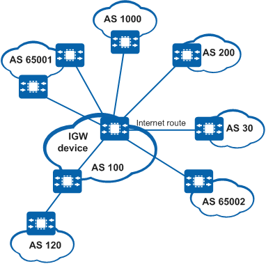
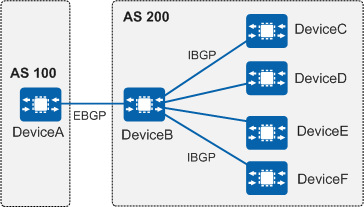

As the routing tables on the live network become larger and the network topology becomes more complex, BGP needs to support more peers. When the BGP device sends a large number of routes to many BGP peers that have identical configurations, the device formats routing updates for each peer separately, which is inefficient.
An update peer-group is a dynamic method that groups BGP peers with identical configurations. Because the group policy is used to format each routing update only once, and then the Update message is transmitted to all the members of the group, this method improves the formatting efficiency exponentially.
Update peer-groups are applicable to the following scenarios:
Scenario with an international gateway
Scenario with RRs
Scenario where routes received from EBGP peers need to be sent to all IBGP peers


In all of the preceding scenarios, a BGP device needs to send routes to a large number of BGP peers, most of which have identical configurations. This is most evident in the networking shown in Figure 2. In this case, the efficiency of formatting routing updates is a performance bottleneck.
The update peer-group feature can overcome this bottleneck. After the feature is applied, each routing update is formatted only once, and the generated Update message is sent to all peers in the group. For example, an RR has 100 clients and needs to reflect 100,000 routes to them. If the RR formats routing updates per peer, it needs to format 100,000 routing updates 100 times (a total of 10 million) before sending Update messages to the 100 clients. The update peer-group feature improves efficiency 100-fold, because the 100,000 routing updates need to be formatted only once.